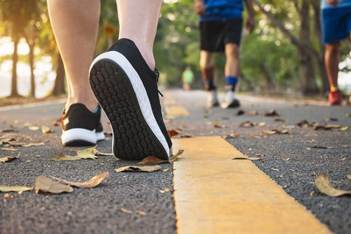
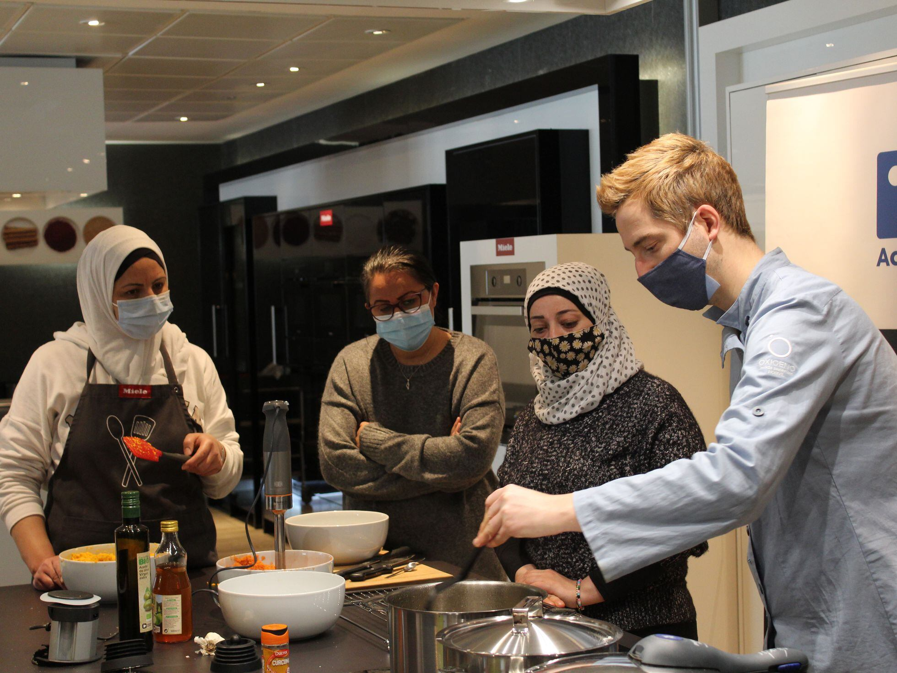
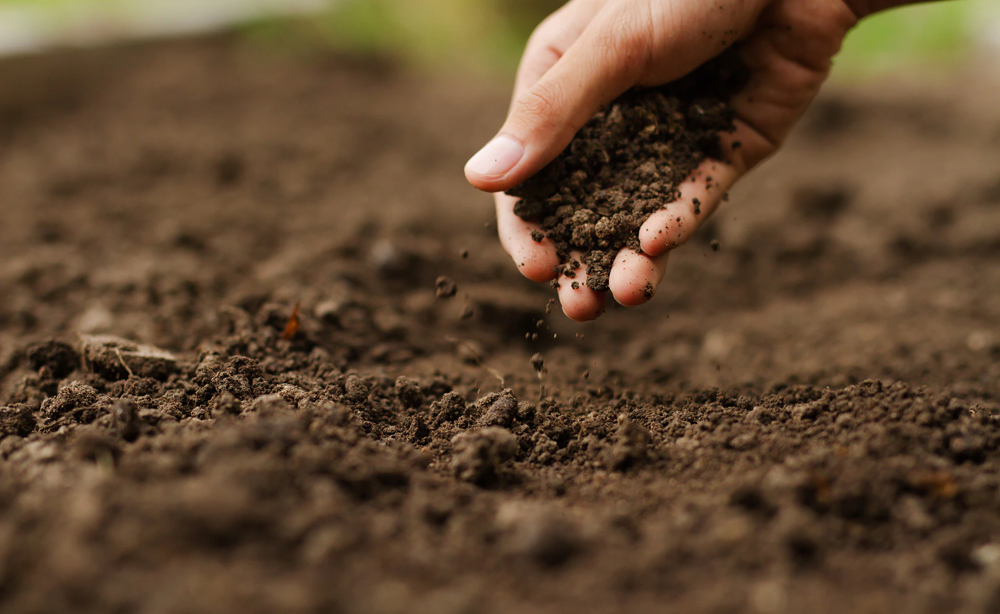

Con pequeñas acciones...
Puedes hacer grandes cambios!
En el corazón de nuestra ONG, la acción cobra vida. Cada actividad organizada es un paso audaz hacia un futuro sin hambruna infantil. Desde campañas de concientización hasta programas de alimentación, cada iniciativa refleja nuestro compromiso inquebrantable. Unir fuerzas con nosotros significa participar en una travesía de impacto tangible, donde cada esfuerzo contribuye a la construcción de un mundo más justo y equitativo. Únete a nuestras actividades y sé parte del cambio. Juntos, transformamos la compasión en acción, brindando esperanza y nutriendo el potencial de cada niño. ¡Juntos somos la diferencia!
La ONG "HambreCero Kids" organizará una caminata solidaria para concienciar sobre la hambruna y recaudar fondos para apoyar proyectos alimentarios en comunidades desfavorecidas. La caminata tendrá una distancia accesible para todos los participantes y estará acompañada de actividades educativas sobre seguridad alimentaria y nutrición. Todos los fondos recaudados se destinarán a la implementación de programas de alimentación sostenible y distribución de alimentos en áreas afectadas por la hambruna.
Estaremos organizando una serie de talleres de cocina nutritiva en colaboración con chefs locales y expertos en nutrición. Estos talleres estarán dirigidos a familias en comunidades afectadas por la hambruna y enseñarán técnicas prácticas para preparar comidas saludables con ingredientes accesibles y económicos. Además de aprender recetas, los participantes recibirán información sobre la importancia de una dieta equilibrada para el crecimiento y desarrollo adecuado de los niños.
Nuestra ONG organizará una feria de agricultura sostenible para promover prácticas agrícolas respetuosas con el medio ambiente y la seguridad alimentaria en comunidades rurales. La feria contará con la participación de agricultores locales, expertos en agricultura orgánica y proveedores de tecnologías agrícolas innovadoras. Los asistentes tendrán la oportunidad de aprender sobre técnicas de cultivo sostenible, acceder a recursos y herramientas agrícolas, y establecer contactos para futuras colaboraciones.
